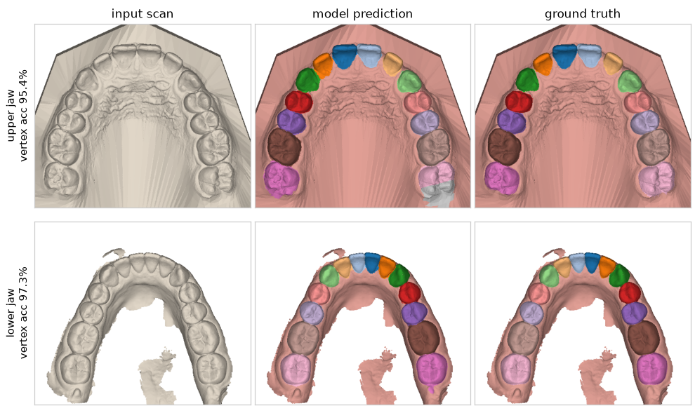
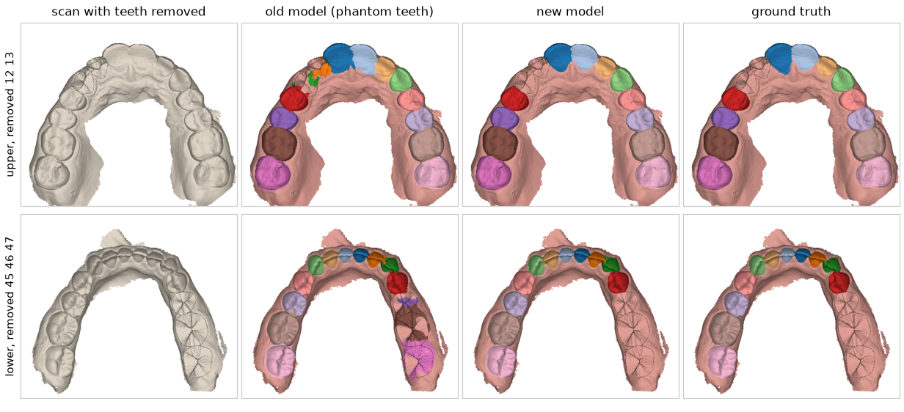

现状一句话：常规口扫分得准，模拟缺牙能找到九成多；真实的缺牙只找到 55%，主要败在缺隙已经闭合的牙列上。这一轮没有重新训练。
| 指标 | 一句话 | 方向 |
|---|---|---|
| T-mIoU（牙齿 mIoU） | 每颗牙：分出来的范围和标准答案重叠了多少（重叠面积 ÷ 两者合起来的面积），所有牙取平均。分割论文都用它比 | 越大越好 |
| 综合分 | 3DTeethSeg'22 挑战赛的官方总分，下面三项的平均：牙找得准不准（位置）、牙和牙龈分得对不对、牙号标得对不对 | 越大越好 |
| 所有牙号全对的扫描 | 一个口扫里每颗牙的牙号都对，才算这个扫描“全对”；最严格的一个 | 越大越好 |
| 幻影牙 | 缺牙的地方被错标成一颗牙。有幻影牙，后面就发现不了缺牙 | 越小越好 |
| 缺牙检出 | 缺了的牙被报出来的比例（牙号要对）；“放宽”= 报成相邻牙号也算 | 越大越好 |
| 误报 | 牙明明都在，却报了缺牙 | 越小越好 |


| 旧模型 | 新模型 | |
|---|---|---|
| 幻影牙（缺 1 颗 / 缺 2–3 颗） | 41% / 50% | 0% / 0% |
| 缺牙被检出 | 23% / 18% | 91% / 94% |
| 检测完全正确的扫描 | 20% / 3% | 79% / 78% |